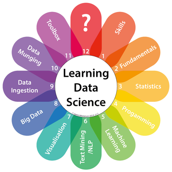

There is a huge demand in learning data science, as it has emerged as a widely desirable skill in many areas. Although courses are now available on a variety of aspects of data analytics and big data, they require programming which many students lack. As a result, acquiring practical data analytics skills is out of reach for many students and professionals, particularly in the humanities and soft sciences, posing severe limitations to our ability as a society to take advantage of our vast digital data resources.
Our goal is that students with no programming background learn basic concepts of data science, so they can understand how to pursue data-driven research projects in their area and be in a better position to collaborate with computer scientists in such projects. Although it is always beneficial to learn programming, not every student is inclined to invest the time and effort to do so. And we believe that many students will get the motivation to take a programming class after taking this course.
Our focus has been to design a curriculum that teaches computing concepts above the level of particular programming languages and implementations. In addition, we teach a broader set of data science skills than other courses, including not only machine learning and databases but also parallel and distributed computing, semantics and metadata, and provenance. There is also more emphasis on end-to-end methods for data analysis, which include data pre-processing, data post-processing, and visualization. Students learn how to analyze different kinds of data, including text, images, spatio-temporal data, and network data.
Learning these concepts must be supplemented with practice. But how can students with no programming skills be able to see programs in action? A major component of the course is the use of an intelligent workflow system that enables students to practice complex data analysis concepts. We capture common analytic methods as multi-step computational workflows that are used by students for practice with real-world datasets within pre-defined lesson units. The workflows include semantic constraints that the system uses to assist the students to set up parameters correctly and to validate their workflows. This enables students to learn in the context of real-world and science-grade datasets and data analytics methods.